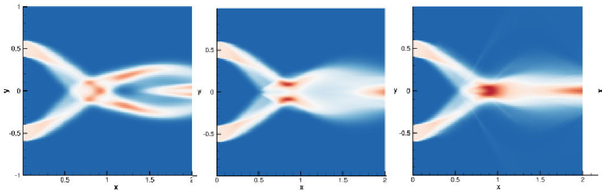

M.A.Sc Thesis
M.A.Sc Thesis
Eulerian-based Moment Closures for the Modelling of Polydisperse Polykinetic Sprays
Supervised by Groth, Clinton P. T.
In this thesis, multiple Eulerian-based maximum entropy spray models for higher order velocity space are extended to allow the modelling of sprays with different sized droplets. The moment space considered includes 14 moments for fully three-dimensional physical space. Eulerian-based moment methods are possibly less expensive than Lagrangian-based particle tracking methods and yet can provide statistical information on computational grids of infinitesimal size. In particular, the 5-,10-, and 14- moment maximum entropy velocity moment closures are applied with a corresponding 5-moment maximum entropy size model coupled using the Coupled Size Velocity Moment (CSVM) method. The resulting method is applied to one-dimensional closures producing 11 coupled size and velocity moments. The numerical implementations of so-called “partially” polydisperse versions of these spray models, whereby only bulk velocity depends on droplet size, are presented along with results for canonical particle trajectory crossing problems which demonstrate the predictive capabilities of each model. 
Funding: Green Aviation Research and Development Network (GARDN), Southern Ontario Smart Computing for Innovation Platform (SOSCIP), Mitacs, Pratt & Whitney Canada
Computational Resources: Southern Ontario Smart Computing for Innovation Platform (SOSCIP), Compute Canada